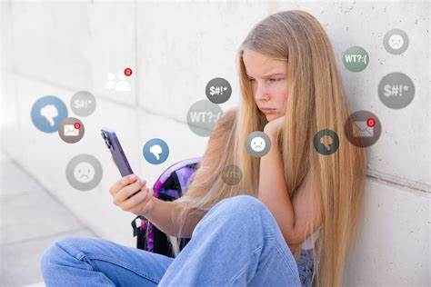
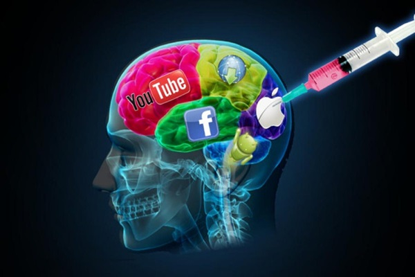

Causas de adicción a las redes sociales
Existen diferentes motivos que condicionan la necesidad de estar conectados/as a las redes sociales. A continuación, veremos las principales causas de la adicción a las redes sociales.
Normalización del uso de las redes sociales
Uno de las causas de la adicción a las redes sociales que influye en el desarrollo de la dependencia, por ejemplo hacia Instagram, es la naturalidad con la que tantas personas comparten fotografías, escriben comentarios e interactúan con los demás. Una experiencia positiva y creativa que deja de serlo en el momento en el que la persona ya no disfruta de ello, sino que siente que su voluntad queda sometida por la necesidad constante de interacción.
Soledad
Internet es una ventana de relación social para todos. Sin embargo, quienes viven un periodo de soledad son más vulnerables ante el riesgo de dependencia porque observan en este vehículo de comunicación un sustituto de esos vacíos y carencias emocionales. En este artículo, te contamos cómo superar el miedo a la soledad para tu felicidad no dependa de las redes sociales.
Alimento del ego
Algunas galerías de imágenes de Instagram proyectan un universo en el que la vanidad parece una constante a partir de imágenes protagonizadas por aquel que muestra sonrisas infinitas y un estilo de vida de ensueño.
Así pues, otras de las causas de la adicción a las redes sociales es este deseo de mostrar una imagen de perfección también recibe un feedback en forma de “like”. Un tipo de lenguaje que ofrece una interacción inmediata y diferente a la de las relaciones presenciales. Es un riesgo confundir el número de seguidores con el valor de la autoestima.
 
Falta de límites
La adolescencia es uno de los periodos en los que los jóvenes son más vulnerables ante la falta de discernimiento de los posibles riesgos de las redes sociales. La falta de formación sobre el uso positivo de las redes sociales puede incrementar la confusión. Esta es una de las razones por las que los padres tienen también la responsabilidad de formarse para conocer el potencial de las redes sociales y la tecnología con el fin de hacer un buen uso de ella, ya que, además, el propio ejemplo de los padres también influye en los hijos.
Dificultades personales
Si hablamos de causas de las redes sociales, en cuanto a adiciones, las barreras en el plano de las habilidades sociales, pueden hacer que una persona se sienta aparentemente más cómoda al relacionarse a través de internet. El riesgo de esto es que el paciente desarrolla estrés y ansiedad cuando tiene que afrontar situaciones presenciales que salen fuera de su zona de confort. Para estos casos, te proponemos actividades para trabajar las habilidades sociales en adultos.

Consecuencias de la adicción a las redes sociales
La dependencia que generan las redes sociales puede afectar de forma negativa a las personas. Las principales consecuencias de la adicción a las redes sociales son las siguientes:
- Dificultades para mantener la concentración: aunque una persona esté físicamente presente en un lugar, su mente puede estar en otro totalmente distinto. Una de las consecuencias de la adicción a las redes sociales es que la persona consulta de forma compulsiva cualquier detalle, dejando en un segundo plano la realidad directa del día a día. En este artículo, te mostramos diferentes ejercicios para mejorar tu concentración.
- Alteración de los hábitos de sueño y descanso: la tendencia de vivir pegado a una pantalla altera el ritmo de vida en factores tan esenciales como estos. Por ejemplo, la costumbre de consultar el teléfono por la noche retrasa la hora del sueño o interrumpe el descanso nocturno.
- Distorsión de la realidad: la persona se comporta como si el teléfono móvil fuese una prolongación de su ser tan importante como una parte de su propio organismo. Por ejemplo, una de las consecuencias de la adicción a las redes sociales es que se produce una pérdida de intimidad. La persona llega a la conclusión de que un momento es más feliz si lo comparte con los demás.
- Falta de cuidado de la privacidad: como consecuencia de esta pérdida de la esfera de la intimidad, quienes sufren adicción a las redes sociales pierden el control de aquella información que comparten de sí mismos, es decir, no se dan cuenta de la cantidad de datos sobre su propia vida que facilitan a los demás. Gente que, en muchos casos, ni siquiera conoce a la persona.
- Vacío interior: las redes sociales están marcadas por la interacción constante, pero también por lo efímero de esta forma de expresión. Una fotografía compartida en Facebook hace unas semanas es totalmente caduca a día de hoy. Por esta razón, este exceso de actividad que queda en el plano de la superficialidad, deja tras de sí una inmensa sensación de vacío ante la alta demanda emocional de reconocimiento ajeno.